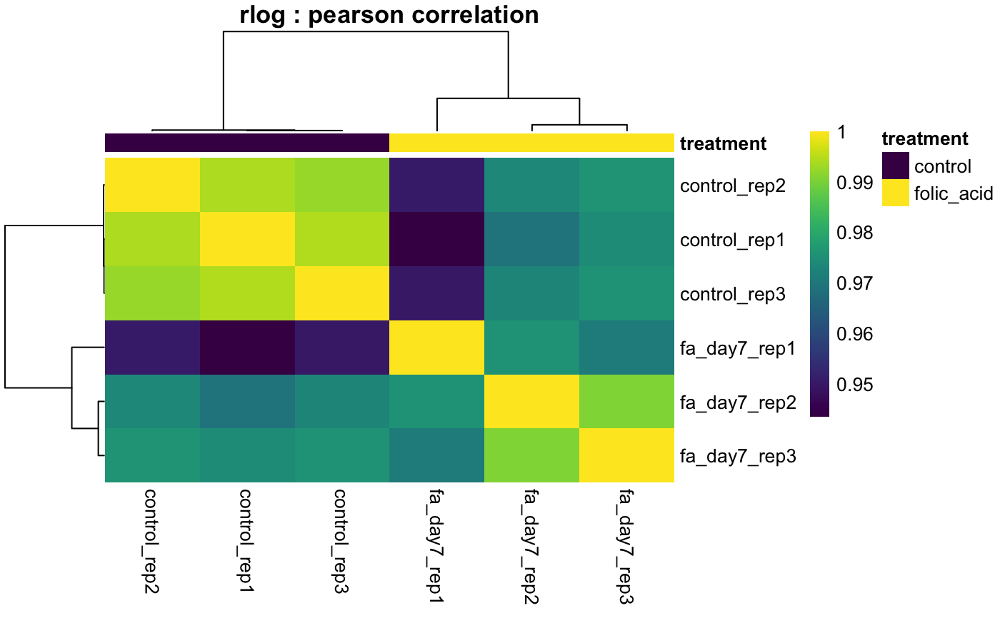
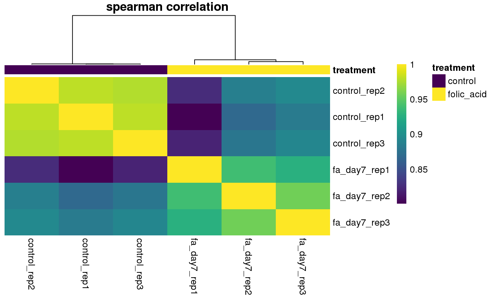

This function calculates a correlation matrix based on gene expression per
sample. By default, this function processes all gene counts per sample to
calculate the corrlation matrix. This behavior can be overrided with the
input of gene identifier vector. In this case, only the expression of the
desired genes will be used to calculate the correlation matrix.
plotCorrelationHeatmap(object, ...) # S4 method for bcbioRNASeq plotCorrelationHeatmap(object, transform = "rlog", method = "pearson", interestingGroups, genes = NULL, samples = NULL, title = NULL, color = inferno(256), legendColor = viridis)
| object | Object. |
|---|---|
| ... | Passthrough arguments to |
| transform | String specifying |
| method | Correlation coefficient (or covariance) method to be computed.
Defaults to |
| interestingGroups | Category to use to group samples. In the plotting
functions, this will define color and shape, where applicable. If unset,
this is automatically determined by the metadata set inside the
bcbioRNASeq object. When set to |
| genes | Optional. Character vector of specific gene identifiers to plot. |
| samples | Optional. Character vector of specific samples. |
| title | Optional. Plot title. |
| color | Colors to use for plot. Defaults to |
| legendColor | Colors to use for legend labels. Defaults to |
Graphical output only.
Other Heatmaps: plotDEGHeatmap,
plotHeatmap
# Pearson correlation (default) plotCorrelationHeatmap(bcb)# Spearman correlation plotCorrelationHeatmap(bcb, method = "spearman")# Flip the palettes used for plot and legend# NOT RUN { plotCorrelationHeatmap( bcb, color = viridis(256), legendColor = inferno) # }# Default pheatmap palette# NOT RUN { plotCorrelationHeatmap( bcb, color = NULL, legendColor = NULL) # }